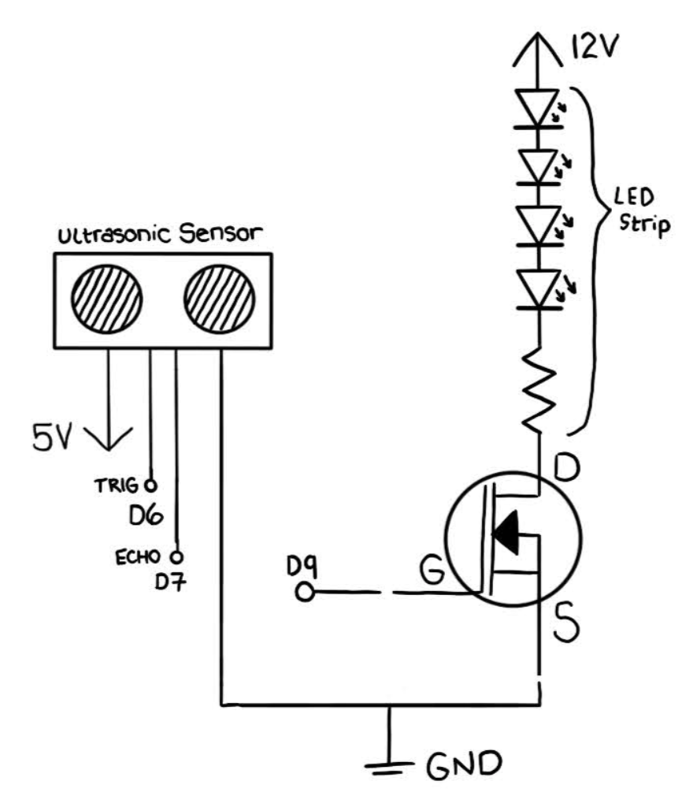
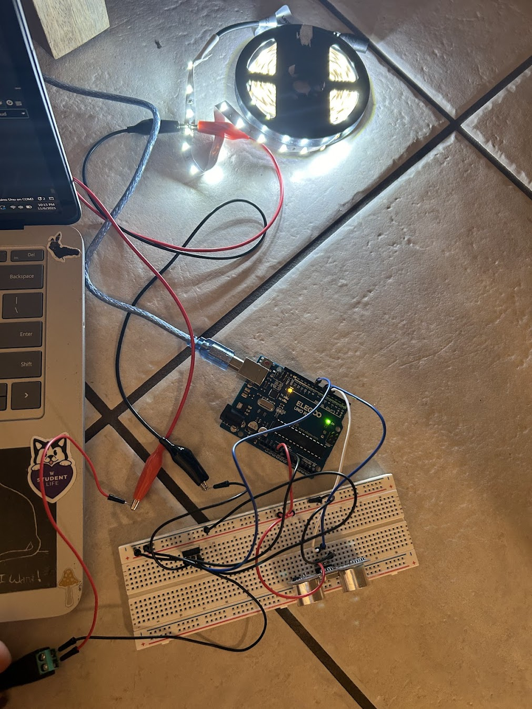
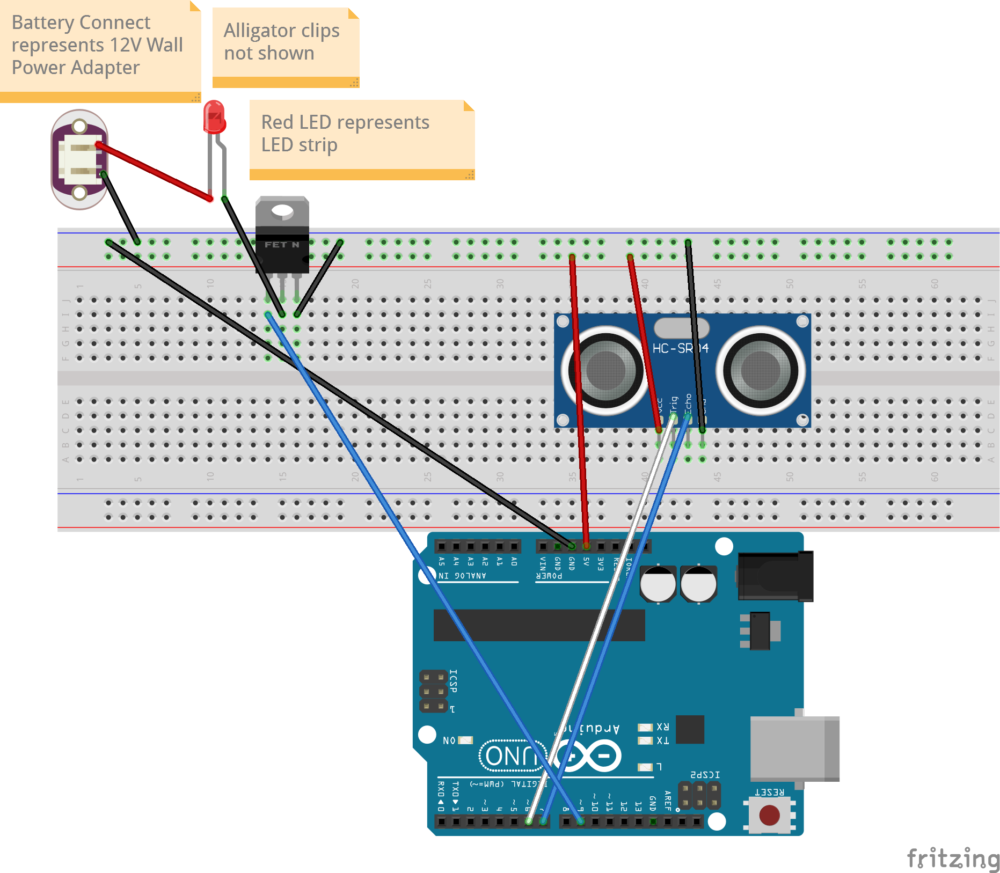
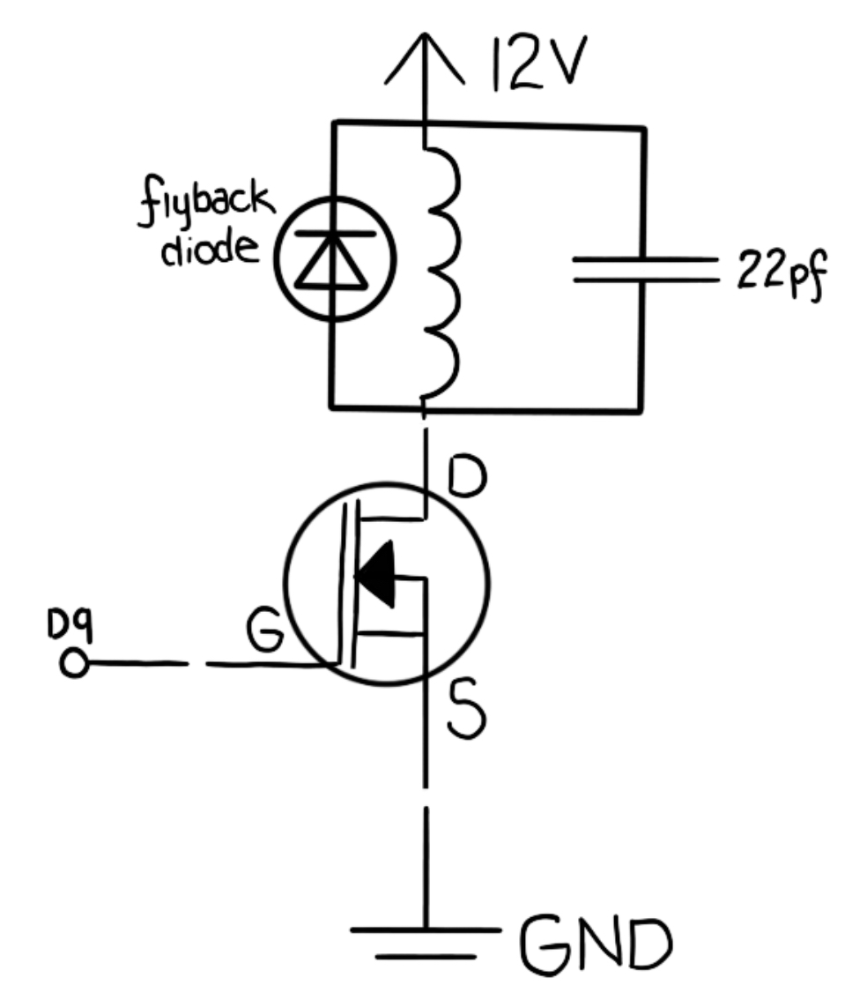
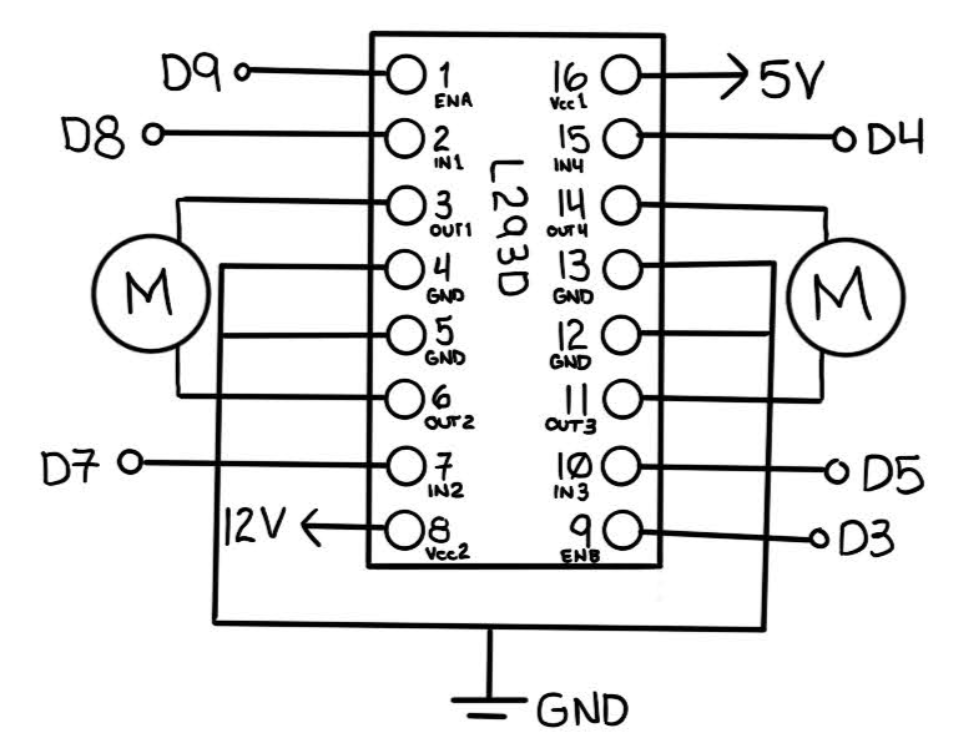

Here is where all the documentation for Assignment 5: High(er) voltage and transistors!
The prompt is to use the following:

I started by connecting the LED strip (positive side) to 12V of power. The resistor pictured is part of the LED strip-- it's 180ohms for every series of 4 LEDs. I then connect the LED strip (negative side) to the drain pin of the transistor. I connect the gate pin of the transistor to PWM pin 9, and the source pin to ground. For the ultrasonic sensor, I connect the VCC pin to 5V, the Trigger pin to Arduino pin 6, the Echo pin to Arduino pin 7, and the GND pin to the same Ground as the transistor.


Connections:
For my circuit, I started by connecting the LED strip to power using a 12V Wall Power Adapter. I connected the positive side of the adapter to the red alligator clip, and clipped that to a positive connection point on the LED strip. I connected a black aligator clip to the respective negative connection point, then connected that to the black wire that leads to the drain pin of the transistor. For the negative side of the adapter, I used a black wire to connect this to ground on my breadboard (to ensure all parts connect to the same ground). For the gate pin of the transistor, I used a blue wire to connect it to PWM pin 9 on the Arduino in order to control the gate. For the source pin of the transistor, I connected it to ground on the breadboard using a black wire. For the ultrasonic sensor, I used a red wire to connect the VCC pin to the power rail on the breadboard, and another red wire to connect the power rail to 5V on the Arduino. I used a white wire to connect the TRIG pin to Arduino pin 6, and a blue wire to connect the ECHO pin to Arduino pin 7. Lastly, I used a black wire to connect the GND pin to ground on the breadboard, and another black wire to connect the ground rail to the GND pin on the Arduino.
Voltage & Current:
The transistor I used is an N-MOSFET transistor (DMT6009LCT) with a max continuous drain current of 37.2A (at room temperature) and max voltage of 60V. The 12V power supply is appropriate for the LED strip, as the working voltage of the strip is 12V, which is also well under the max voltage rating of the transistor. The power supply outputs 2A and the LED strip I used has a current draw of approximately 1.5A when all LEDs are lit, which is well under the max current rating of the transistor. The ultrasonic sensor is connected to 5V, as the working voltage of the sensor (HC-SR04) is 5V. The ultrasonic sensor draws approximately 15mA of current during operation, which is well within the max current rating of 40mA for the Arduino pins. In terms of the current flowing through Arduino's ground, the 15mA from the ultrasonic sensor is the only notable current flowing through this path, which is well within the max rating of 200mA for the Arduino's ground pin. The 1.5A from the LED strip is separate from the Arduino's ground, as the transistor's source pin is connected to the breadboard ground, which is connected to the negative side of the 12V power supply.
// code reference sources:
// https://arduinogetstarted.com/tutorials/arduino-ultrasonic-sensor-led
// https://projecthub.arduino.cc/lucasfernando/ultrasonic-sensor-with-arduino-complete-guide-284faf
// https://www.instructables.com/LED-Distance-Indicator-Using-Ultrasonic-Sensor/
// constant variables for pin numbers that won't change
const int T_Pin = 6; // Arduino pin connected to Ultrasonic Sensor's TRIG pin
const int E_Pin = 7; // Arduino pin connected to Ultrasonic Sensor's ECHO pin
const int LED_Pin = 9; // Arduino pin connected to transistor's gate pin which controls the LED strip
// variables will change
float duration; // duration of pulse from ECHO pin
float distance; // calculated distance from Ultrasonic Sensor
void setup() {
// initialize serial port
Serial.begin (9600);
// set TRIG pin to output mode (outputting pulse)
pinMode(T_Pin, OUTPUT);
// set ECHO pin to input mode (inputting duration of pulse)
pinMode(E_Pin, INPUT);
// set LED pin to output mode (outputting high/low for transistor gate)
pinMode(LED_Pin, OUTPUT);
}
void loop() {
// ensure TRIG pin is off and wait 2 ms
digitalWrite(T_Pin, LOW);
delayMicroseconds(2);
// turn on TRIG pin and send pulse for 10 ms
digitalWrite(T_Pin, HIGH);
delayMicroseconds(10);
digitalWrite(T_Pin, LOW);
// measure duration of pulse from ECHO pin
duration = pulseIn(E_Pin, HIGH);
// calculate the distance
distance = 0.017 * duration;
// map distance to LED brightness (0-255)
int ledBrightness = map(distance, 0, 120, 255, 0); // Adjusted for desired max distance
// make sure brightness is within valid range
ledBrightness = constrain(ledBrightness, 0, 255);
// print the distance and brightness values to Serial Monitor for debugging and tracking
Serial.print("distance: ");
Serial.print(distance);
Serial.println(" cm");
Serial.print("brightness");
Serial.println(ledBrightness);
// set LED brightness using mapped value
analogWrite(LED_Pin, ledBrightness);
// wait before measuring again
delay(500);
}

1: This is the datasheet for the n-mosfet transistor: https://www.diodes.com/assets/Datasheets/DMT6009LCT.pdf What is the absolute maximum amount of current between pins 2 and 3?
Pins 2 and 3 are the drain and source pins. The maximum current rating between these pins (at around room temperature) is 37.2A.
2: Draw a schematic for a circuit with using at least your arduino, a DC motor, a flyback diode, and capacitors between power and ground. Find parts with datasheets you could use for each of these schematic components.

This circuit uses a capacitor to prevent voltage spikes and reduce electrical noise while operating a DC motor. I chose the 22pf capacitor as the maximum voltage for the circuit is 12V, and the max voltage rating of the capacitor is 50V, which is well above the circuit voltage. The parts I used and their respective data sheets are as follows:
3: Here is the datasheet for the L293D chip: https://www.ti.com/product/L293D Draw a schematic using at least your arduino, this chip, and two motors. Write (pseudo) code that shows how you would move the motors both forward, both back, then one forward one back, and one back then forward.

To use this circuit to move the motors, I would first assign variables to each EN (A&B) and IN (1-4) pin and set all pinModes to OUTPUT. Then, to control the motors, I would use the following (pseudo) code for each direction: